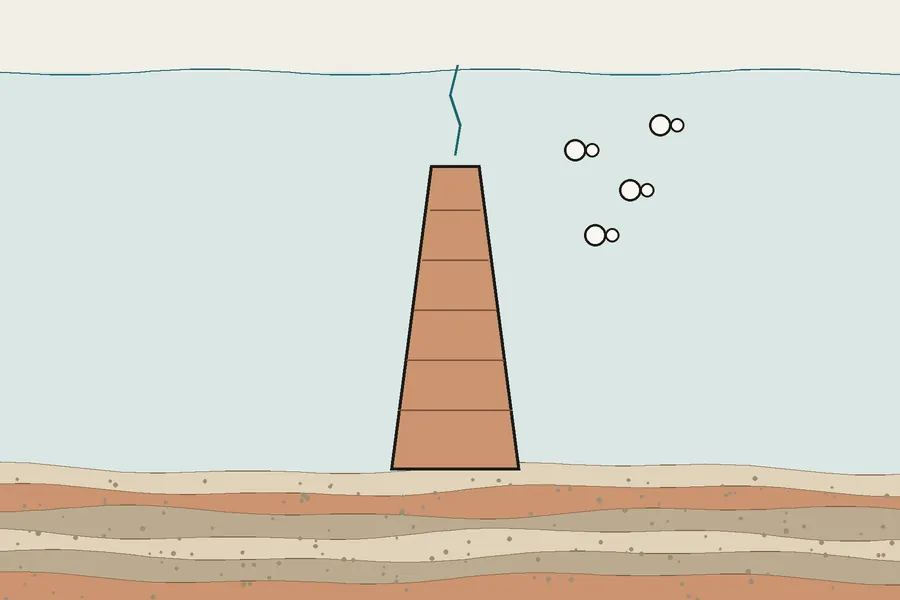

Paper · 29 Jul 2025
Carbon reduction powered by natural electrochemical gradients under vent conditions
Altair, Dragoti, Sojo, Li et al., Hudson · JACS 147:28674-28683

In a sentence
A vent-wall reactor makes formic and acetic acid from CO2 and H2 using only pH gradients across iron-sulfide minerals.
In plain words
The alkaline-vent idea says the first metabolism ran on the difference in acidity between vent fluid and seawater, across thin mineral walls. This team built a bench-scale wall from iron-sulfide minerals with hydrogen-rich alkaline fluid on one side and CO2-rich acidic water on the other. Small amounts of formic and acetic acid, the first two steps of an ancient carbon-fixing pathway, appeared on the seawater side.
Technical detail
FeS, Ni-FeS and FeS2 barriers produced micromolar formic and acetic acid on the ocean side (pH 5.7, CO2) against an H2, pH 11 vent side; e.g. FeS2 at 25 °C gave 4.2 µM formic and 2.5 µM acetic acid after 24 h, none on the vent side. Currents of 10 nA to 10 µA sufficed. At 75 °C on both sides Ni-FeS gave about 816 µM formic acid. Builds on Hudson et al. 2020 (PNAS, doi:10.1073/pnas.2002659117).
What we take from it
Planned test
Vent step tables (task #4) record these yields with their conditions. Products still stop at two carbons.
Source checked against its DOI. Read the original.